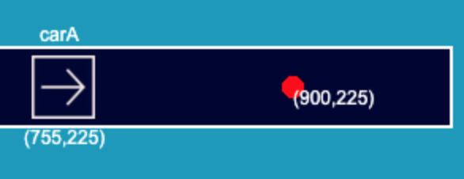
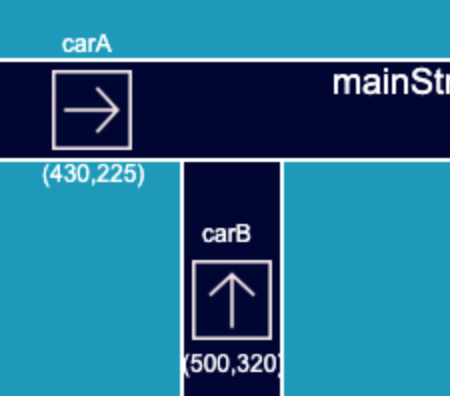
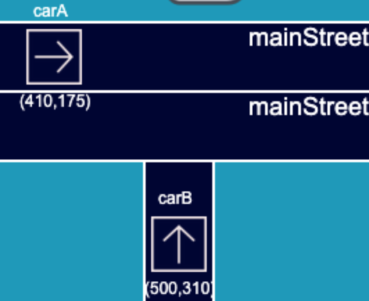
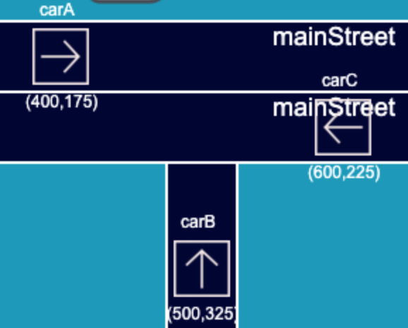
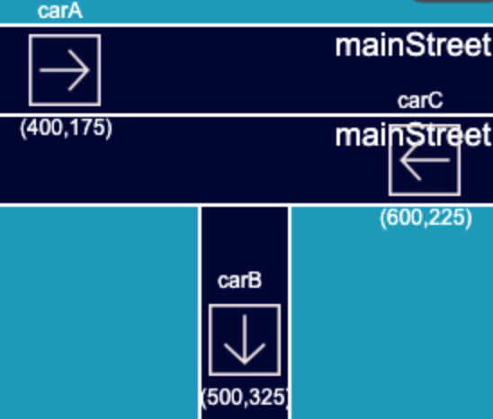
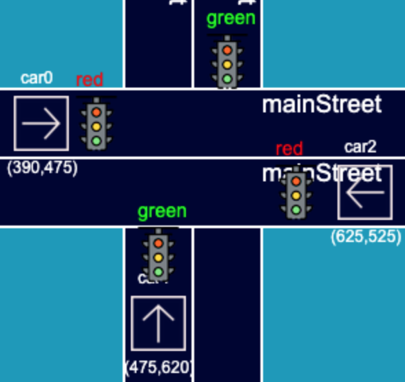

LPS visualiser introduction
The main objective of this project is to apply and extend a JavaScript implementation of a logic-based language LPS to a multi-agent simulation of self-driving cars.The same set of rules will be applied to all cars to achieve a certain goal such as reaching out to a goal destination, avoiding accidents. Additionally, cars should be complying with traffic regulations.
-> This application contains a LPS javascript interpreter in lps-1.0.16.bundle.js
,the loaded LPS program or the input LPS program will be interpreted via lps-1.0.16.bundle.js
-> This application is using Jekyll, bootstrap for the front-end layout, and pixi.js for the vehicle visualisation.
-> This application has restful API using express in Node.js. The server is hosting on amazon AWS EC2 webservice.
-> All the LPS program are stored in MongoDB and Mongoose.js . (This part is still under developed.)
Instruction
-> Start visualising your autonomous vehicle program by entering the lps program or by clicking
on the choose file button to load the .lps file
-> Define the vehicle in your lps program or using + or - button to
add or delete a car. Mention that deletion during the program time will not modify the underlying LPS
program
-> Watch the behaviour of the vehicle by clicking the Animate button
-> Clear the program in the text area via Clear button. Clear the program by
refreshing the page.
LPS predicate
Define street(fact) as: street(StreetName, coordinate(X, Y), Width, Height,
Number_of_lane)
Define location of vehicle(fluent) as: location(Name_of_car, coordinate(X, Y),
Direction)
Define traffic light(fluent) as: trafficLight(coordinate(X, Y), Working_status, Color,
FacingDirection)
Define the goal of the Vehicle(fluent) as: goal(VehicleName,coordinate(X, Y))
Each vehicle can have multiple state(fluent) eg stopped(VehicleName) or moving(VehicleName)
Define the junction(fact) as: eg junction(JunctionName,coordinate(A, B),coordinate(C,
D),coordinate(E, F),coordinate(G, H)). where (A, B), (C, D), (E, F), (G, H) are 4 different corners
Sample LPS programs are provided in home page
Logic in traffic scenario
-

Assumption: carA need to reach it'g goal which is at (900,225)
If the goal of Vehicle has not been reached and Vehicle is moving then Vehicle will drive forward.
If the goal of Vehicle has been reached and Vehicle is moving then Vehicle will perform arriving action
-

Assumption: carA intend to turn right or go straight. carB intend to turn right or left
if Vehicle is at T-junction and Vehicle is moving then it will remain the same direction or turn to a new direction.
if Vehicle and Vehicle2 are possible to have collision and Vehicle's route is not blocked then Vehicle should drive forward.
if Vehicle and Vehicle2 are possible to have collision and Vehicle's route is blocked then Vehicle should wait for Vehicle2.
-

Assumption: carA intend to turn right or go straight. carB intend to turn right or left
Same logic as before, however, the warning distance will be increased because carA on the up lane might turn right which may possible collide with carB
-

Assumption: carA intend to turn right or go straight. carB intend to turn left or right, carC intend to turn left or go straight
Based on the assumption, few rules are made:
->A car driving straight has a higher pirority than a car turning right or left at an un-controlled T-junction.
->If a car is driving into a narrow road it should wait until other car drive out of the narrow.
->One car is turning left and another car is turnning right to the same road at the same time, left turn has higher priority
if carA has right turn intention and carB has rightTurn intention and carC has intention of going straight then carA wait for CarB, carB wait for CarA, carC step ahead.
if carA has intention of turning right and CarB has intention of turning left and carC has intention of going straight then carA should wait for carB, carB should wait for carA, carC should step ahead.
if carA has intention of turning right and carB has intention of turning right and carC has intention of turning left then carA should wait for carB and carC. carB should step ahead, carC should wait for carB. rightTurn_Intension(carA) ^rightTurn_Intension(carB) ^leftTurn_Intension(carC)-> waitForCarB&C(carA), stepAhead(carB), waitForCarB(carC).
rightTurn_Intension(carA) ^leftTurn_Intension(carB) ^leftTurn_Intension(carC)-> waitForCarB&C(carA), stepAhead(carB), waitForCarB(carC).
-

rightTurn_Intension(carA) ^goStraight_Intension(carB) ^goStraight_Intension(carC)-> waitForCarC(carA), stepAhead(carB), stepAhead(carC).rightTurn_Intension(carA) ^goStraight_Intension(carB) ^leftTurn_Intension(carC)-> waitForCarC(carA), stepAhead(carB), stepAhead(carC). -

greenTraffic(trafficLight) ^ moving(Vehicle) ^ location(Vehicle) == location(trafficLight)-> drive(Vehicle).redTraffic(trafficLight) ^ moving(Vehicle) ^ location(Vehicle) == location(trafficLight)-> waiting(Vehicle).
Developer setup
For developer setup please refer to the github repo
Back to home page to start visualise your LPS program.